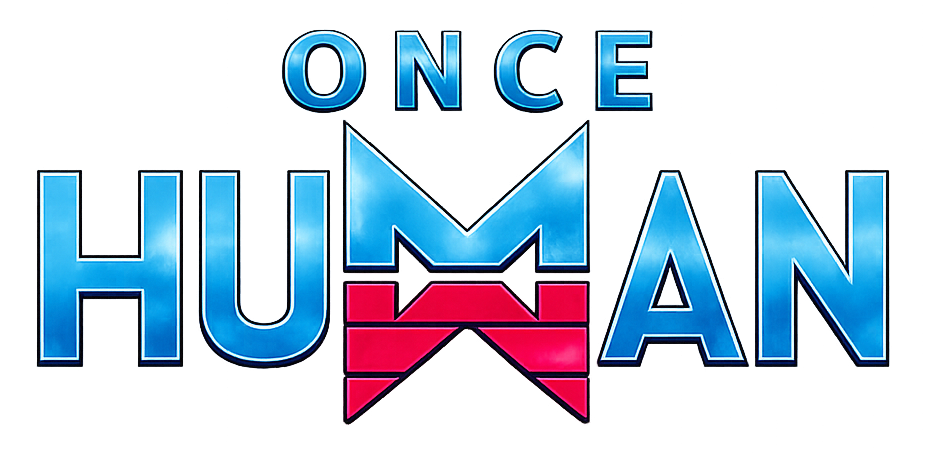

Once Human
Retour aux Aventures terminées
La Guilde explore les terres altérées d'un monde post-apocalyptique, où la survie dépend autant de
nos refuges que de notre capacité à affronter les créatures nées de la Stardust.
Chaque scénario apporte son lot de découvertes, de dangers et de nouvelles aventures.
📜 Informations de l'expédition
Origine :
Aventure principale 🏆
Statut :
Accomplie 🏆
📅 Début :
Juillet 2026
🎮 Type :
Survie / Exploration / Construction
👥 Participants :
Sakura-Natas, Elfyre, Tibalte
📖 Histoire de l'aventure
Après la Chute des Étoiles, le monde a été transformé par une mystérieuse substance appelée Stardust.
Les survivants doivent désormais composer avec un environnement hostile, des créatures altérées et les vestiges d'une civilisation en ruines.
La Guilde a exploré ces terres dévastées, construit ses refuges et affronté les menaces de Manibus.
🎯 Objectifs de l'expédition
- 🌍 Explorer un monde brisé
- 🏠 Construire nos refuges
- ⚔️ Affronter les menaces et dévoiler la vérité
🎬 Souvenirs de l'expédition
Retrouvez les chroniques de cette aventure.
📜 Informations de l'expédition
Origine :
Aventure principale 🏆
Statut :
Cartographiée 🗺️
📅 Début :
Octobre 2026
🎮 Type :
Survie / Exploration / Construction / Action
👥 Participants :
Mk, Elfyre
📖 Histoire de l'aventure
La contamination par la Stardust s'étend désormais au-delà des terres connues, plongeant la Guilde dans un vaste monde océanique rempli de mystères.
Entre archipels isolés, profondeurs sous-marines et épaves abandonnées, il faudra explorer des territoires inconnus tout en affrontant les dangers d'un environnement imprévisible.
Pour survivre, la Guilde devra développer ses équipements, construire sa propre forteresse flottante et braver les eaux hostiles.
Mais au cœur de cet océan se cachent des menaces toujours plus redoutables, jusqu'à l'affrontement avec le mystérieux Seigneur englouti.
🎯 Objectifs de l'expédition
- 🌊 Explorer les îles et les profondeurs de l'océan
- 🚢 Construire et améliorer notre forteresse flottante
- 🐙 Affronter les menaces abyssales et défier le Seigneur englouti
🎬 Souvenirs de l'expédition
Retrouvez les chroniques de cette aventure.